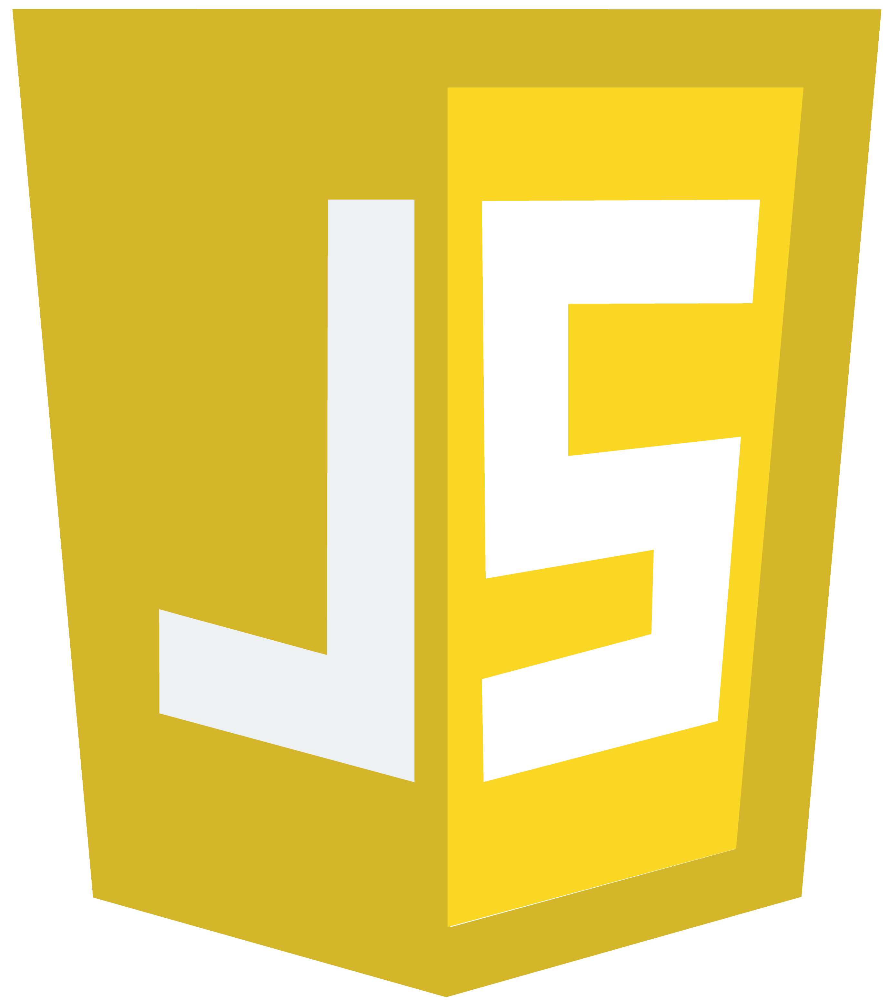
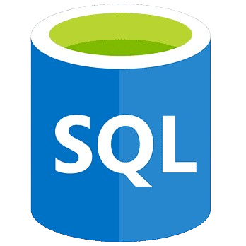
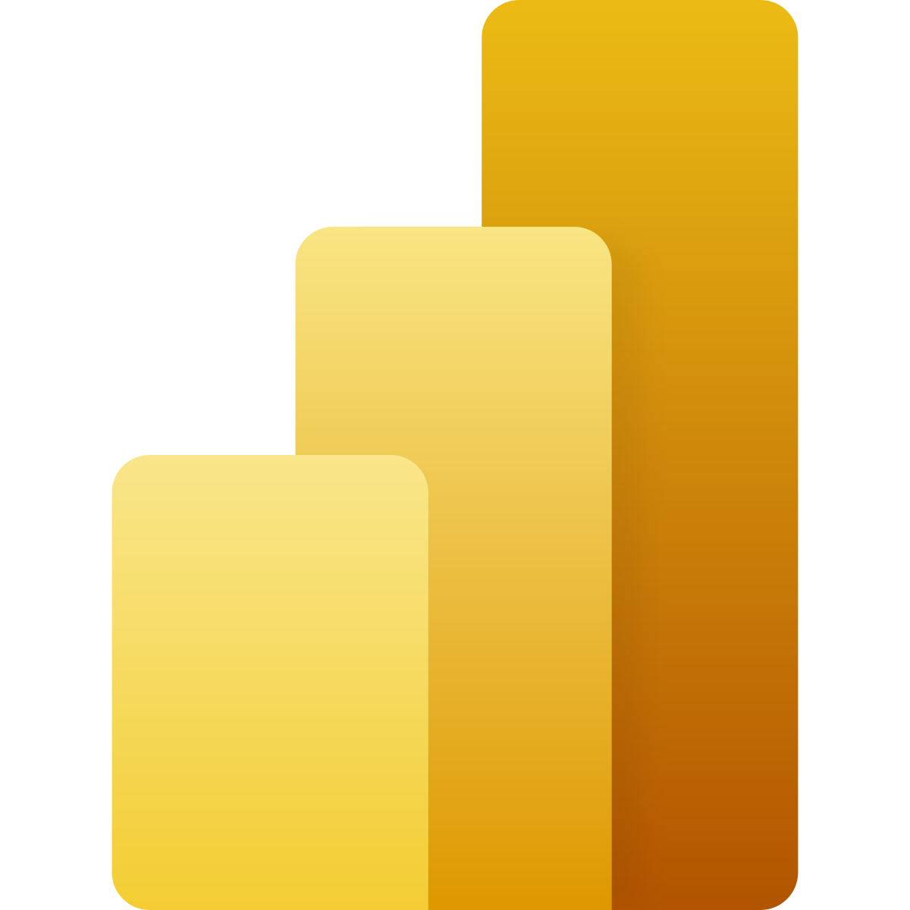

Quem eu sou?
Sou um analista de dados
com experiências em automação,
desenvolvimento de sistemas,
web scraping, machine learning
banco de dados, nuvem(AWS)
e insights valiosos.
Além de possuir conhecimentos
em várias ferramentas como:
MySQL, Python, Pandas, APIs RESTful,
Looker Studio, Power BI, Git/GitHub,
ETL e um vasto conhecimento em dados.
Sou uma pessoa que busca
não apenas se manter atualizada
com as tecnologias, mas também
aprender novas ferramentas
para implementar no ambiente de trabalho,
sempre com o intuito de inovar.



